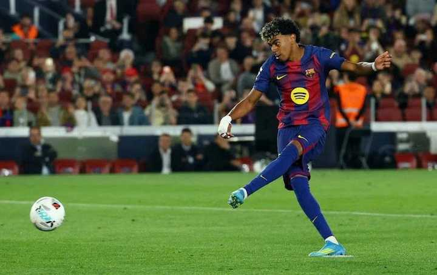

So sánh Yamal và Cherki: Ai tỏa sáng hơn ở mùa giải 2025-2026?
Hai tiền vệ cánh tài năng Lamine Yamal (Barcelona) và Rayan Cherki (Manchester City) đang tạo dấu ấn lớn trên sân cỏ châu Âu, nhưng họ có đặc điểm khác nhau.

Yamal sút phạt đền ghi bàn trong trận Barca thắng Celta Vigo ở vòng 32 La Liga trên sân Camp Nou hôm 22/4
Tiền vệ cánh 22 tuổi của Manchester City Rayan Cherki gần đây đã có những nhận định ủng hộ khả năng của mình so với đối thủ cạnh tranh Lamine Yamal. Trong một cuộc phỏng vấn với kênh truyền hình Canal Plus, tiền đạo Georges Mikautadze đã có những lời khen tặng đặc biệt dành cho Cherki.
"Rayan giỏi hơn Yamal về khía cạnh bóng đá", Mikautadze nhận định. "Anh ấy chơi được cả hai chân, trong khi Yamal không. Rayan có tầm nhìn rộng, khả năng ghi bàn, tạo cơ hội, xử lý tốt các pha bóng cố định. Về cơ bản, anh ấy có thể làm được hầu hết mọi thứ trên sân".
Cherki là một sản phẩm của học viện bóng đá danh tiếng Lyon (Pháp). Anh nổi lên vào mùa giải 2024-2025 với một loạt những danh hiệu ấn tượng, bao gồm Vua kiến tạo, Cầu thủ rê bóng hay nhất Ligue 1, Cầu thủ trẻ xuất sắc nhất trong Cup châu Âu và Bàn thắng đẹp nhất từ chung kết Nations League.
Cherki (áo xanh) ghi bàn trong trận Man City thắng Arsenal 2-1 tại vòng 33 Ngoại hạng Anh trên sân Etihad
Hè năm 2025, Manchester City đã bỏ ra 43 triệu USD để chiêu mộ tiền vệ cánh tây Ban Nha này. Kể từ khi gia nhập, Cherki đã chứng minh giá trị của khoản đầu tư đó. Với 45 lần ra sân, anh đã ghi 10 bàn và tạo ra 13 pha kiến tạo, góp phần giúp Man City giành Cup Liên đoàn, tiếp tục đua tranh với Arsenal ở Ngoại hạng Anh và vào chung kết Cup FA.
Cựu hậu vệ huyền thoại Gael Clichy của Manchester City từng bình luận: "Cherki chơi đều hai chân giống như một sự kết hợp giữa Arjen Robben chỉ có hai chân trái và David Beckham chỉ có hai chân phải".
Tuy nhiên, nếu nhìn từ góc độ thống kê và danh hiệu tập thể, Lamine Yamal lại có những con số ấn tượng hơn. Tiền vệ cánh tuổi teen của Barcelona hiện 18 tuổi đã ghi 23 bàn và kiến tạo 18 lần trong 45 trận cho Barca mùa này. Kỳ trước, anh ghi 18 bàn và tạo 25 pha kiến tạo trong 55 trận. Yamal đã giành hai Siêu Cup Tây Ban Nha, một Cup Nhà vua và chuẩn bị được vinh danh khi giành La Liga thứ ba cùng với Barcelona.
Ở đấu trường quốc tế, Yamal cũng thể hiện sự chín chắn sớm hơn Cherki. Thiên tài của Catalonia bắt đầu tỏa sáng từ khi mới 16 tuổi, ghi một bàn và kiến tạo bốn lần trong bảy trận, giúp tuyển Tây Ban Nha vô địch Euro 2024. Giải World Cup 2026 sắp tới có thể là cơ hội để hai cầu thủ này đối đầu trực tiếp và so tài trên sân cỏ quốc tế lớn nhất.
Điều thú vị là Mikautadze cũng có lịch sử gắn bó với học viện Lyon, nơi anh phát triển từ năm 2008 đến 2015. Sau một thời gian chơi cho Metz và Ajax, tiền đạo 25 tuổi quay trở lại Lyon vào năm 2024 với giá 22 triệu USD. Tuy nhiên, do gặp khó khăn về mặt tài chính, Lyon buộc phải bán những cầu thủ giỏi nhất. Cherki ra đi sang Manchester City, trong khi Mikautadze chuyển sang Villarreal với giá 36 triệu USD.